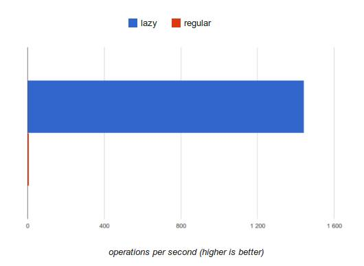

延迟求值 如何让Lo Dash再提速X100?
「注释」作者在本文里没有说明这么一个事实：
目前的版本Lo-Dash v2.4.1并没有引入延迟求值的特性，Lo-Dash 3.0.0-pre中部分方法进行了引入，比如filter(),map(),reverse()。
我时常觉得像Lo-Dash这样优秀的库已经无法再优化了。它整合了各种奇技淫巧已经将JavaScript的性能开发到了极限。它使用了最快速的语句，优化的算法，甚至还会在发版前做性能测试以保证回归没问题。
延迟求值
但似乎我错了-还可以让Lo-Dash有明显的提升。只需将关注点从细微的优化转移到算法上来。譬如，在一次循环中我们往往会去优化循环体：
|
|
但针对循环体的优化往往很难，很多时候已经到极限了。相反，优化getLength() 函数尽量减少循环次数变得更有意义了。你想啊，这个数值越小，需要循环的10ms就越少。
这便是Lo-Dash实现延迟求值的大致思路。重要的是减少循环次数，而不是每次循环的时间。让我们考察下面的例子：
|
|
我们只想取出3个价格低于10元的小球。通常情况下我们先过滤整个数据源，最后从所有小于10的元素里返回前面三个即可。

但这种做法并不优雅。它处理了全部8个数据，但其实只需要处理前面5个我们就能拿到结果了。同样为了得到正确的结果，延迟求值则只处理最少的元素。优化后如下图所示：

一下子就获得了37.5%的性能提升。很容易找出提升X1000+的例子。比如：
|
|
这个例子中map和filter 将遍历99999个元素，但很有可能我们只需处理到1000个元素的时候就已经拿到想要的结果了。这回性能的提升就太明显了（benchmark）：

流水线
延迟求值同时带来了另一个好处，我称之为“流水线”。要旨就是避免产生中间数组，而是对一个元素一次性进行完所有操作。下面用代码说话：
|
|
上面看似优雅的写法在原始的Lo-Dash里会转换成下面的样子（直接求值）：
|
|
当引入了延迟求值后，代码大致就成这样的了：
|
|
减少不必要的中间变量多少会带来性能上的提升，特别是在数据源特别巨大，内存又吃紧的情况下。
延迟执行
延迟求值带来的另一个好处是延迟执行。无论何时你写了段链式代码，只有在显式地调用了.value()后才会真正执行。这样一来，在数据源需要异步去拉取的情况下，可以保证我们处理的是最新的数据。
|
|
而且这种机制在某些情况下也会提高执行效果。我们可以老早发送一个请求获取数据，然后指定一个精确的时间来执行。
后记
延迟求值并且不算什么新技术。在一些库中已经在使用了，比如LINQ,Lazy.js还有其他等等。那么问题来了，Lo-Dash存在的意义是啥？我想就是你仍然可以使用你熟悉的Underscore 接口但享受一个更高效的底层实现，不需要额外的学习成本，代码上面也不会有大的变动，只需稍加修改。
译注：对于
lazy evaluation与deferred execution中lazy与deferred的区分，在翻译时找不到恰当的区分。前者用主流使用的「延迟」会更易懂，而后者同时也译为「延迟」, 但他们在记性上还是存在一定差别的，具体的讨论可见这里。